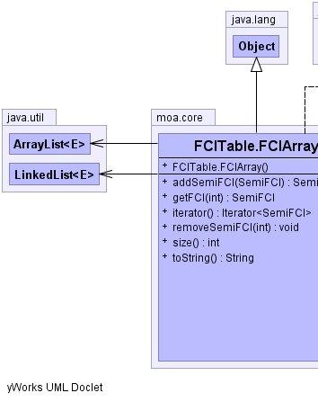
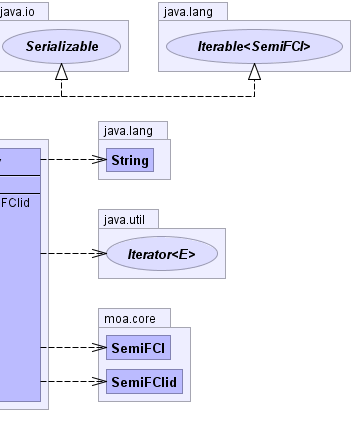

protected class FCITable.FCIArray extends java.lang.Object implements java.lang.Iterable<SemiFCI>, java.io.Serializable
|  |  |
| Constructor and Description |
|---|
FCITable.FCIArray()
Default constructor.
|
| Modifier and Type | Method and Description |
|---|---|
SemiFCIid |
addSemiFCI(SemiFCI itemset)
Add an itemset to the FCIArray and returns the ID assigned.
|
SemiFCI |
getFCI(int position)
Returns a copy of the semiFCI in the passed position
|
java.util.Iterator<SemiFCI> |
iterator() |
void |
removeSemiFCI(int position)
Remove a semiFCI from the table by putting it in the garbage queue.
|
int |
size()
Size of the FCIArray
|
java.lang.String |
toString() |
public FCITable.FCIArray()
public SemiFCIid addSemiFCI(SemiFCI itemset)
itemset - itemset to be addedpublic void removeSemiFCI(int position)
position - id of the semiFCI in the arraypublic SemiFCI getFCI(int position)
position - position of the semiFCI in the FCIArraypublic int size()
public java.lang.String toString()
toString in class java.lang.Object